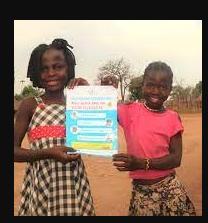
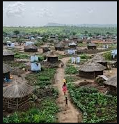

Work Experience
A community Health Worker in 2020
Christian Outreach Assistant, Feb 2021
Teacher at Concorda Highway Way Academy 2021
I teaches at Concorda primary school after I graduated from High school.No career is worthless in life unless you make yourself believe so.
Love your career and you will see it fruits, you cannot enjoy what you despise

Concorda Highway Academy
I volunteered during corona virus as a community Health Worker in 2020. We move from door to door in Nyumanzi Refugee settlement preaching the preventive measure of covid-19 and what to do if a person is infected. We distributed soap and teaches the community on how to build a protected home.
Community Health Work
Christian Assistant Outreach Officer.
I was employed by Christian Agency For Relief and Humanitarian Development (CARHD) to assess the livelihood of the community and report my finding to the head office
